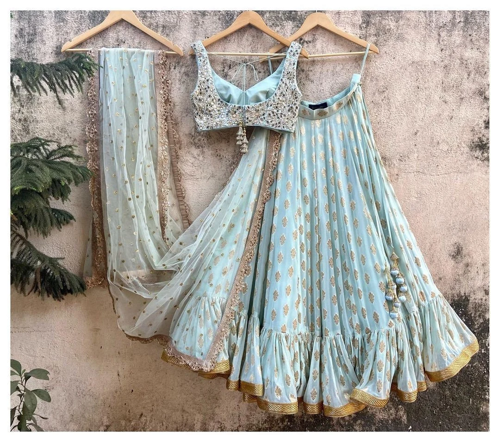
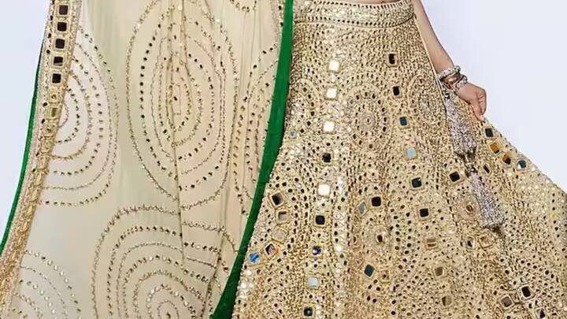

शादी का मौसम आते ही हर दुल्हन और शादी में शामिल होने वाली महिलाओं के मन में सवाल आता है - इस साल कौन से लहँगे ट्रेंड में हैं? अनुष्का बुटिक आपके लिए लेकर आया है 2025 के शादी सीजन के लिए टॉप लहँगा ट्रेंड्स जो आपको स्टाइलिश और ट्रेंडी लुक देने में मदद करेंगे।
1. पेस्टल शेड्स का राज
इस साल पेस्टल कलर्स का बोलबाला है। बेबी पिंक, मिंट ग्रीन, लैवेंडर और पाउडर ब्लू जैसे सॉफ्ट शेड्स में लहँगे इस सीजन में बहुत पसंद किए जा रहे हैं। ये कलर्स न केवल एलिगेंट लुक देते हैं बल्कि गर्मियों में भी फ्रेश फील कराते हैं।
2. फ्लोरल प्रिंट्स और एम्ब्रॉयडरी
फूलों की डिजाइन इस साल भी ट्रेंड में हैं, लेकिन अब ये और भी रियलिस्टिक और डिटेल्ड हो गए हैं। बड़े-बड़े फूलों की एम्ब्रॉयडरी और प्रिंट्स वाले लहँगे विशेष रूप से पसंद किए जा रहे हैं। ये डिजाइन्स पारंपरिक और समकालीन दोनों तरह के लुक के लिए परफेक्ट हैं।
3. हेवी जरी वर्क
पारंपरिक जरी वर्क वाले लहँगे कभी आउट ऑफ फैशन नहीं होते। इस साल भी गोल्ड और सिल्वर जरी वर्क वाले लहँगे बहुत ट्रेंड में हैं, खासकर रेड, ग्रीन और रॉयल ब्लू जैसे बोल्ड कलर्स के साथ।

4. कोरल और टेराकोटा शेड्स
इस साल कोरल और टेराकोटा जैसे अर्थ टोन्स भी बहुत पसंद किए जा रहे हैं। ये कलर्स गर्मियों में पहनने के लिए परफेक्ट हैं और सभी स्किन टोन्स के साथ अच्छे से मैच होते हैं।
5. मिरर वर्क और सिक्विन्स
मिरर वर्क और सिक्विन्स वाले लहँगे इस साल भी शादियों में खूब देखने को मिल रहे हैं। ये डिजाइन्स रात के समय में खासकर स्टनिंग लुक देते हैं और लाइट में चमकते हैं।
6. प्रिंसेस कट सिल्हूएट
इस साल फ्लेयर्ड और फुल-स्कर्ट वाले लहँगे बहुत ट्रेंड में हैं जो एक प्रिंसेस लुक देते हैं। ये सिल्हूएट न केवल स्टेटमेंट बनाता है बल्कि चलने और डांस करने में भी आरामदायक होता है।
7. ज्योमेट्रिक पैटर्न्स
पारंपरिक फ्लोरल डिजाइन्स के अलावा, ज्योमेट्रिक पैटर्न्स वाले लहँगे भी इस साल बहुत पसंद किए जा रहे हैं। ये डिजाइन्स मॉडर्न और यूनीक लुक देते हैं।
अपने बॉडी टाइप के अनुसार लहँगा चुनने के टिप्स:
- पतली काया: फ्लेयर्ड और फुल स्कर्ट वाले लहँगे चुनें जो आपकी बॉडी को वॉल्यूम दे
- मोटापा: ए-लाइन या स्ट्रेट कट लहँगे चुनें जो स्लिमिंग इफेक्ट दें
- लंबी हाइट: हेवी एम्ब्रॉयडरी वाले लहँगे आप पर बहुत अच्छे लगेंगे
- छोटी हाइट: लाइट फैब्रिक और मीडियम वर्क वाले लहँगे चुनें
अनुष्का बुटिक में हमारे पास इन सभी ट्रेंडिंग स्टाइल्स के लहँगे उपलब्ध हैं। आप हमारे स्टोर पर आकर इन्हें ट्राय कर सकती हैं या हमारी गैलरी में ऑनलाइन देख सकती हैं। किसी भी जानकारी के लिए हमसे व्हाट्सएप पर संपर्क करें।
क्या आप इनमें से कोई लहँगा ऑर्डर करना चाहती हैं?
व्हाट्सएप पर पूछताछ करें